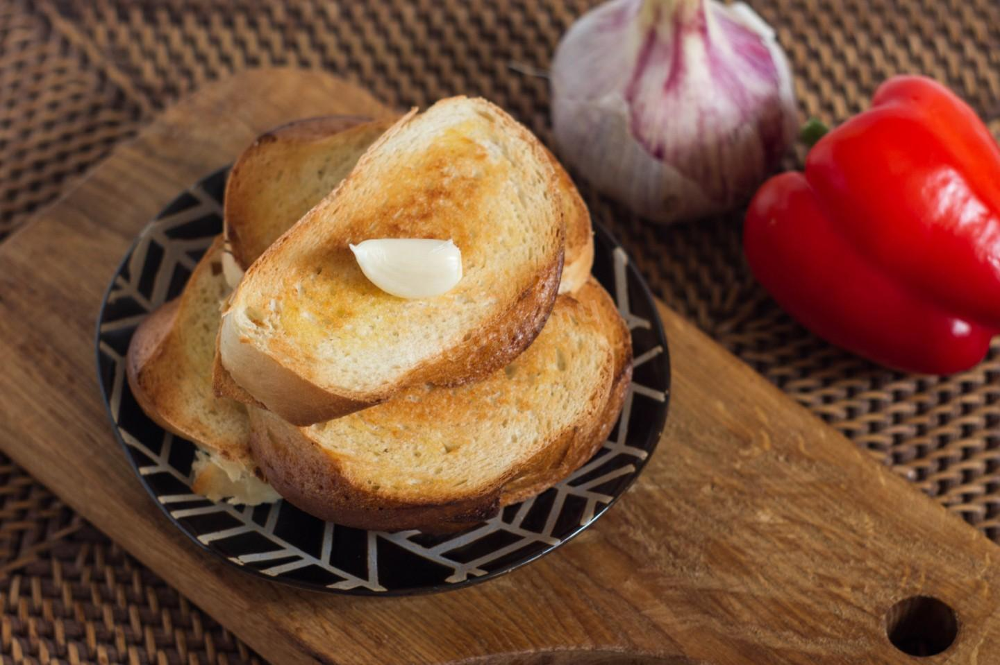
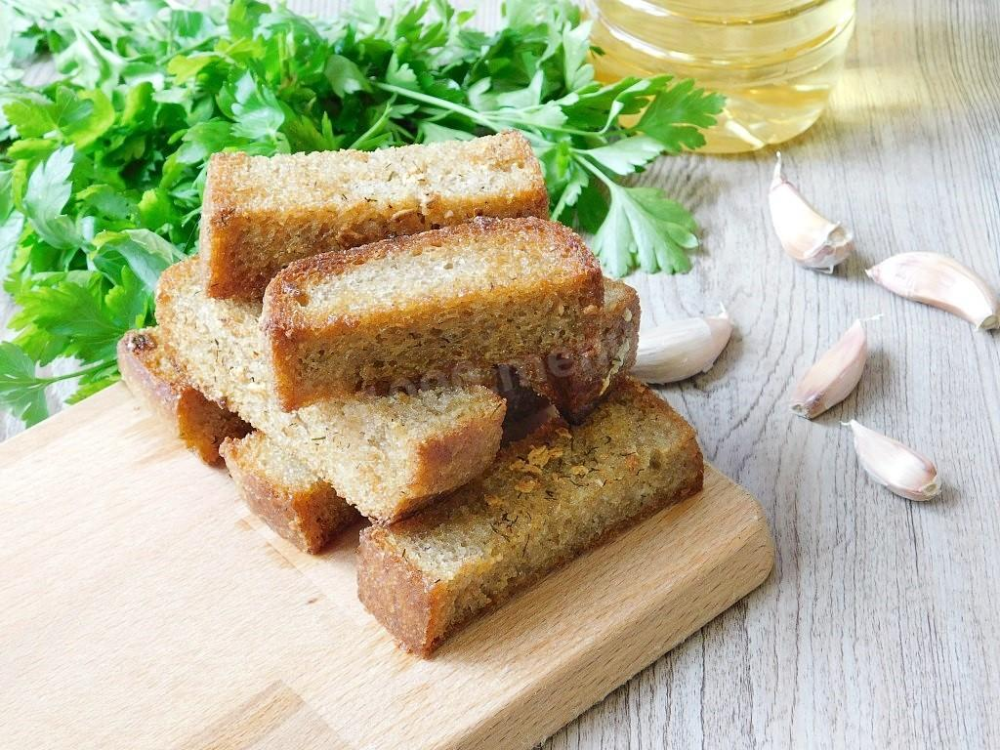
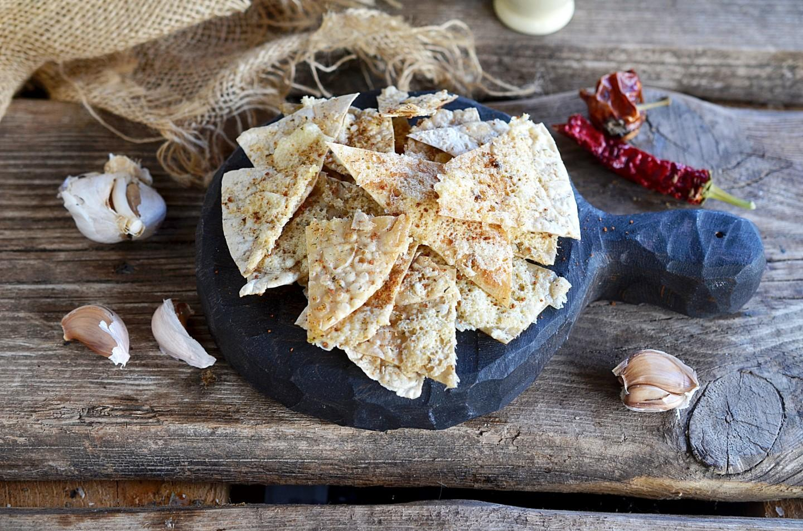

Батон (7 ломтиков) 350 гр Чеснок 1 зубч. Растительное масло 1 стол.л.
Шаг 1. Подготовьте необходимые продукты для приготовления гренок из батона с чесноком на сковороде. Потребуется несколько кусочков батона. Лучше брать уже нарезанный, так гренки получаться аккуратнее. Также подготовьте немного растительного масла и чеснок, лучше молодой, конечно. Я использую кукурузное не рафинированное масло, но можно брать любое, которое вам подходит.
Шаг 2. Мне не очень нравится, когда гренки получаются слишком масляные и сильно пропитанные маслом, поэтому растительное масло предпочитаю не наливать на сковородку, а смазывать маслом непосредственно сами ломтики батона при помощи силиконовой кисточки. Смажьте растительным маслом хлеб с одной стороны.
Шаг 3. Затем выложите ломтики батона смазанной маслом стороной вниз на хорошо разогретую сухую сковородку. И теперь смажьте маслом вторую, верхнюю на данный момент сторону ломтиков батона.
Шаг 4. Поджаривайте греночки на огне чуть больше среднего до необходимой вам степени румянности. Аккуратно переверните и также поджарьте батон со второй стороны.
Шаг 5. Готовые гренки переложите со сковородки на тарелку и натрите разрезанным пополам чесночным зубочком. Или же вилкой нанесите натертый на мелкой терке чеснок. Мне нравится просто натирать. Гренки из батона с чесноком на сковороде готовы! Подавайте их незамедлительно к столу, пока гренки свежие, хрустящие.
Для приготовления гренок из батона с чесноком на сковороде желательно все таки использовать молодые зубочки чеснока. Если чеснок старый, то необходимо удалить внутренний зеленый росточек, если он есть, чтобы удалить "агрессивность" запаха и вкуса чеснока. Батон можно использовать как свежайший, так и брать вчерашний. Из вчерашнего хлеба ничуть не хуже. А из очень свежего получатся греночки с мягкой серединкой.

Шаг 1. Для приготовления гренок используйте серый хлеб. Лучше всего брать вчерашний или даже 2-3-дневный хлеб. такой хлеб будет меньше крошиться при нарезке. Нарежьте его на толстые брусочки
Шаг 2. Очистите несколько зубчиков чеснока.
Шаг 3. В чашу налейте немного растительного масла.
Шаг 4. Чеснок пропустите через чеснокодавилку и добавьте его в масло. Так же добавьте немного соли и сухие специи. В качестве специи я использую сушеный укроп.
Шаг 5. Затем каждый кусочек слегка обмакните с разных сторон в масляную смесь.
Шаг 6. Выложите брусочки хлеба на противень для запекания. Поставьте в горячую духовку при 150 градусах на 15-30 минут. В процессе контролируйте, чтобы сухарики не подгорели. Можно их переворачивать. Готовые сухарики выложите на тарелку и угощайтесь. Приятного аппетита!

Шаг 1. Подготовьте все необходимые продукты. Лаваш нам понадобится тоненький, это как правило армянский лаваш. Чем тоньше он будет, тем лучше. Растительное масло подойдет абсолютно любое: и рафинированное и необработанное масло. Если вы хотите придать какой-то определенный вкус готовым чипсам, возьмите например ароматное подсолнечное или оливковое масло. А из масел без явно выраженного вкуса подойдет любое: рапсовое, кукурузное, рафинированное подсолнечное и др.
Шаг 2. Масло посолите, дождитесь пока соль полностью растворится. Количество соли на ваш вкус.
Шаг 3. Также в масло добавьте среции и приправы. Я брала сухие специи, которые знакомы всем, без экзотических вкусов. Но это могут быть и другие травы или приправы: сушеный тимьян или розмарин придадут неповторимый аромат, копченая паприка - незабываемый "копченый" вкус и аромат, перец чили - непередаваемую остроту. Также сушеные специи вполне можно заменить и свежими травами, только надо будет их очень тонко нарезать. Перемешайте до однородного состояния.
Шаг 4. Лаваш нарежьте на кусочки желаемой формы и размера. Сильно мельчить не надо - средняя длина-ширина около 2-3 см. Я нарезала лаваш на треугольники, но это могут быть и квадраты или просто кусочки неопределенной формы.
Шаг 5. Выложите кусочки лаваша на посуду,пригодную для использования в микроволновой печи. Напомню, что это может быть стеклянная, деревянная, бумажная, фарфоровая посуда. Ни в коем случае нельзя использовать в микроволновках металлические предметы и посуду с позолоченными элементами и рисунком. Или же можете выложить кусочки лаваша непосредственно на стеклянную крутящуюся подставку свч Каждый кусочек лаваша смажьте ароматным маслом с помощью кулинарной кисточк
Шаг 6. Посыпьте натертым сыром. Сыр может быть любой: твердый, полутвердый, моцарелла и даже сыр с плесенью. В принципе, этот момент можно и опустить и готовить чипсы без сыра. Ии же приготовить часть чипсов с сыром, часть без сыра.
Шаг 7. Поставьте тарелку с кусочками лаваша в микроволновку. Готовьте при мощности 1000 - 2 минуты, 800 - 3 минуты, 600-4 минуты. Ориентируйтесь по своей микроволновке - лаваш должен поджариться и стать хрустящим.
Шаг 8. Очень вкусная закуска. Приятного аппетита!